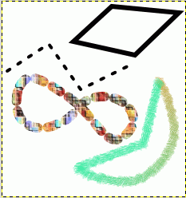

Figure 7.12. Stroking paths

The four paths from the top illustration, each stroked in a different way.
Paths do not alter the appearance of the image pixel data unless they are stroked, using → from the main menu or the Paths Dialog right-click menu, or the “Stroke Path” button in the Tool Options dialog for the Paths tool.
Choosing “Stroke Path” by any of these means brings up a dialog that allows you to control the way the stroking is done. You can choose from a wide variety of line styles, or you can stroke with any of the Paint tools, including unusual ones such as the Clone tool, Smudge tool, Eraser, etc.

You can further increase the range of stroking effects by stroking a path multiple times, or by using lines or brushes of different widths. The possibilities for getting interesting effects in this way are almost unlimited.